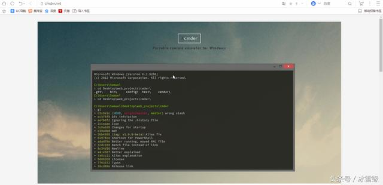
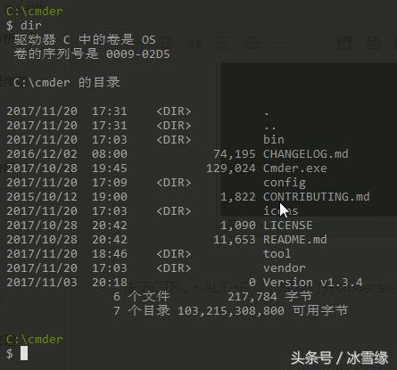
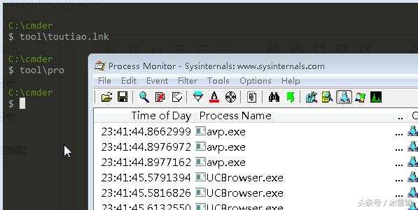

超爽的Windows终端Cmder.exe——装逼和提高工作效率两不误
我们常常看到科研、军事、编程上用的计算机系统是“黑洞洞”的，没有桌面。相对我们现在使用的Windows系统，既方便又美观，那么他们怎么不用Windows一样的图形化界面呢？
告诉你一个令你惊讶的秘密——命令行系统效率更高！
比如你要打开E:/tool/json/myPost.exe,Windows图形化操作系统你要一个一个打开相应的目录，在打开myPost.exe，真是太慢了。
命令行系统只要输入myPost.exe，这个程序就立即运行起来了。
想不想装下逼，在Windows图形化界面玩玩命令行？Windows终端Cmder.exe——给你装逼的机会！
安照惯例上官方地址

下载后，这样
改$提示符（修改后装逼更彻底，不修改也可以）
cmderendorclink.lua文件中第41行中{lamb}修改为$
如下所示：
修改前：
local cmder_prompt = "[1;32;40m{cwd} {git}{hg} [1;30;40m{lamb} [0m"
修改后：
local cmder_prompt = "[1;32;40m{cwd} {git}{hg} [1;30;40m$ [0m"
桌面上添加快捷方式
给快捷方式添加热键，按住CTRL + ALT +F12，自动打开cmder.exe

按下CTRL + ALT +F12，成功打开cmder.exe
试试dir命令

成功！
启动一个应用
我们以打开头条为例子
cmder应用目录里，建tool目录，tool目录新建UC浏览器快捷方式。
目标设置：E:UCBrowserApplicationUCBrowser.exe https://toutiao.com/
格式：UC浏览器位置 空格 网址
我们看看结果
UC浏览器弹出头条网站
试试这些应用的快捷方式呢？（或者应用）
成功打开了，由于应用文件省略.exe扩展名也可以运行，所有小编省略了

打开另一个应用呢？
运行成功！cd命令也可以执行。
打开某个很深的目录呢？
只要把快捷方式复制到某指定目录，一切都能实现！
牢记自己常用的软件、目录。比如小编开机后，监控电脑网络，内存（pro命令）、然后打开工作平台（phpstorm命令）、打开项目目录（phpdir命令）……还可以配和 环境变量或者shell参数，极大的提高了工作效率，不再是磨磨蹭蹭的打开一堆目录。(上面命令小编已经分配好了）
还有很多高大上的用法，等待大家自己挖掘！
如：输入cmd。接管了cmd
输入powershell，接管了powershell
大方的执行了powershell命令
看到这里，是不是想到了学习python，java时候用的黑洞洞的cmd？抛弃他，用cmder装逼！